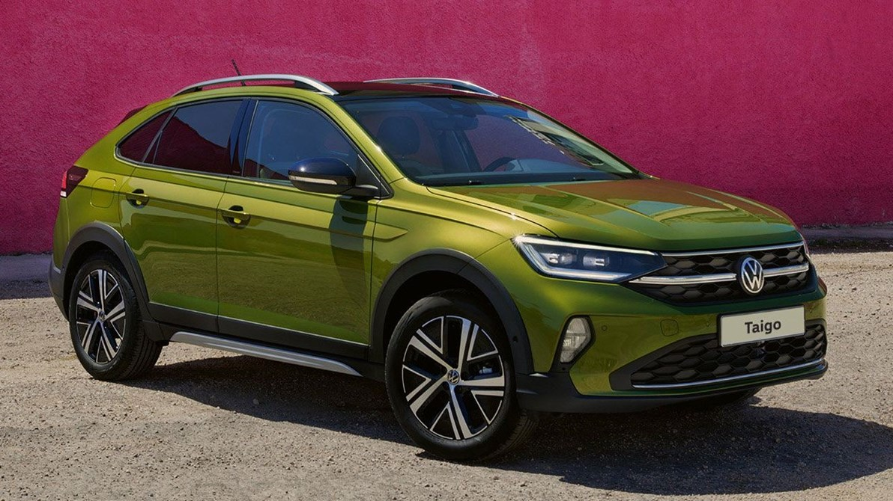
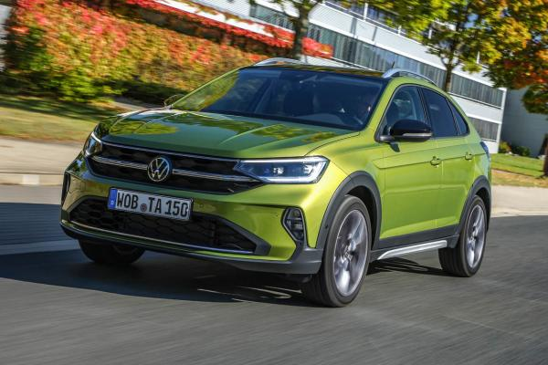

LKSWAGEN
LKSWAGEN
Taigo
Taigo. Hikâye Değişiyor.
Taigo, sadece tarzını değil aynı zamanda karakterini de cesurca sergileyenler ve her gün sıra dışı olanı bulanlar için tasarlandı. Volkswagen'in ilk SUV Coupé modeli Taigo, arkaya doğru alçalan tavan hattının her açıdan vurgulandığı etkileyici ve sportif tasarımı ile tüm bakışları üzerine çekerken, gelişmiş teknolojik özellikleriyle de bir SUV'dan beklenenleri fazlasıyla sunuyor. Güçlü motorlar, zengin donanımlar ve yepyeni renk seçenekleriyle Taigo, her gün için sıra dışı.
Tasarım

Dinamik bir görünüm.
Taigo, Volkswagen’in en üst düzey modellerinde kullanılan ultra yüksek teknolojili bir aydınlatma sistemine sahiptir: IQ. LIGHT. Önde, elektronik kontrol ünitesi tarafından yapay zeka algoritmalarıyla yönetilen IQ. LIGHT – LED Matrix farlar, aktif sürüş güvenliğini en üst düzeyde destekler. Sistem donanımında bulunan çok sayıda bağımsız LED modül , sürüş, hava ve yol durumuna bağlı olarak bağımsız şekilde hareket eder ve her koşulda en ideal aydınlatmayı garanti altına alır. Taigo’nun arkasında ise, tıpkı öndeki gibi Volkswagen logosuna kadar uzanan LED ışık şeridi ile bütünleşik, koyulaştırılmış spor IQ. LIGHT stop lambaları görev yapar. (ST) (R) Tamamı LED aydınlatmalara sahip park, fren, sinyal, geri vites ve sis lambaları ile modern ve işlevsel bu stop lambaları, aynı zamanda modern Volkswagen’lerin yeni tasarım felsefesini ortaya koyar. (L) (ST) (R)
KONFOR

Bir bakışta tüm detaylar karşınızda.
Yoldayken sürüş, performans ve güvenlik ile ilgili verileri takip etmek gerekir. Taigo’nın Dijital Kokpit’inde yer alan 8” Dijital Gösterge Paneli “Digital Cockpit” hız göstergesi, devir saati, ikaz lambaları ve diğer temel içerikleri, 8” genişliğinde yüksek çözünürlüklü TFT LCD ekrana yansıtır. (L) Daha üst donanımlarda bulunan 10,25” Dijital Gösterge Paneli “Digital Cockpit Pro”, kişisel ihtiyaç ve beklentilerinize göre ekranı ayarlamanıza imkân verir. Temel sürüş verilerinin yanı sıra örneğin, sürüş destek sistemlerinin tümünü çekici grafikler ve animasyonlarla ekrana taşıyabilir veya navigasyon haritası ile medya ekranının bir birleşimini görüntülemeyi seçebilirsiniz. (ST) (R)
Teknoloji

Esnek, verimli ve güçlü.
Taigo gibi bir Coupé SUV’de kullanılan motorlardan yüksek performans beklenir. Peki ya verimlilik?.. Taigo’nun 1.0 ve 1.5 litre hacimli TSI motorları güçlü oldukları kadar ekonomiktirler de. Turboşarjlı Kademeli Enjeksiyon anlamına gelen "TSI" teknolojisi, turbo boşluğuna sahip olmayan, en alt devirlerde dahi devreye girebilen hafif ve etkin bir egzoz turboşarjı ile Volkswagen'in geçmiş FSI motorlarından gelen direkt benzin enjeksiyon sistemini birleştirir. Bu sayede çok daha küçük motor hacimlerinden, çok daha fazla beygir gücü (PS) ve çekiş gücü (Tork) elde edilir. Gerçek sürüş keyfi ve dizelleri bile aratmayan verimlilik için TSI, en doğru seçenektir.
Güvenlik

Her zaman doğru yolda.
Yarı Otonom Sürüş Asistanı "Travel Assist", son derece gelişmiş bir sürüş destek sistemidir. Monoton ve yorucu sürüş durumlarında sistem, içeriğinde barındırdığı radar, sensör ve kameralar yardımıyla şerit çizgilerini takip eder, direksiyon, gaz ve frenleme kararlarını otonom bir şekilde vererek önde seyreden araç ile takip mesafesini korur ve gerektiğinde kontrollü bir şekilde şerit değiştirebilir. 1 (O) Yarı Otonom Sürüş Asistanı "Travel Assist", özellikle otoyollarda önünüzdeki araçla mesafeyi hesaba katarak şeridinizi ve hızınızı korumanıza yardımcı olur, trafik sıkışıkken ve dur-kalk trafikte sürüş keyfinizin artırır. 1 Sistemin kabiliyetleri dahilinde. Sürücü her zaman destek sistemlerini kapatma konusunda hazırlıklı olmalı ve aracı dikkatli bir şekilde kullanma sorumluluğunu göz ardı etmemelidir.
Volkswagen Hakkında Modeller Ve Fiyatlar İletişim Sosyal Medya
İkinci El Araçlar Tüm Modeller Yetkili Satıcı Facebook
Ticari Araçlar SUV Modeller Online Servis Instagram
Satış Sonrası Hizmetler Araç Fiyatları İletişim Ve Destek Twitter
Kampanyalar Aksesuarlar Bilgi Formu Youtube
|